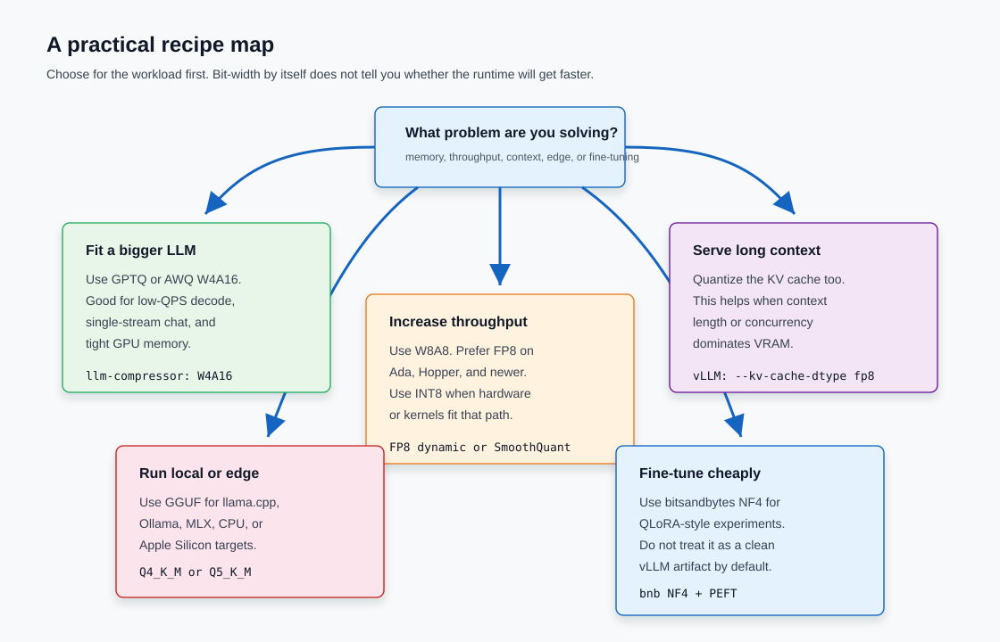

Model Quantization in 2026: A Practical Guide From Bits to Serving
Quantization is the reason a model that looks impossible on paper can run on one GPU, a laptop, or a cheap inference box. It is also the reason some compressed models quietly lose math skill, instruction following, long-context recall, or image fidelity.
This guide starts from the basic idea and ends with the choices I would make for a real deployment in 2026. The companion demo is available at slavadubrov/model-compression-demo.
TL;DR: Start with the workload, not the bit count. Use FP8 W8A8 for high-throughput serving on Ada, Hopper, and Blackwell-class stacks. Use GPTQ or AWQ W4A16 when memory is the main blocker. Add FP8 KV cache when long context or concurrency eats VRAM. Use GGUF for llama.cpp, Ollama, MLX, CPU, Apple Silicon, and local desktop use. Treat sub-4-bit, W4A4, and diffusion quantization as advanced paths that need stronger validation.
The one idea
Quantization turns high precision numbers into a smaller set of representable values.
Think of rounding prices to the nearest dollar. You store fewer digits, but you lose cents. That is fine if you only need a rough budget. It is bad if you are closing payroll.
Neural nets have the same trade. A BF16 weight might hold many subtle values. INT4 gives you 16 buckets. If the model can tolerate the rounding, you save memory and bandwidth. If the wrong layer or channel gets rounded too hard, quality drops.
The basic math looks like this:
q = round(real_value / scale) + zero_point
real_approx = scale * (q - zero_point)
The scale is the bridge between the real values and the low-bit buckets. Good quantization is mostly about picking the right scale, granularity, protected tensors, and kernels.

There are three common ways to choose scales:
- Per-tensor: one scale for the whole tensor. Fast and simple, but outliers can wreck the fit.
- Per-channel: one scale per output channel or row. Better for weight matrices.
- Per-group or block: one scale per small block, such as 128 weights, 32 values, or 16 values. This is the 4-bit sweet spot.
Symmetric quantization centers values around zero. Asymmetric quantization also stores a zero point, which helps skewed distributions. For LLM weights, group-wise symmetric or asymmetric schemes are common. For activations, dynamic scales can be safer because the range changes per prompt, batch, and token.
What gets quantized
People say "the model is quantized" as if one thing happened. Usually several different tensors have different precision.
| Target | What it means | Why it matters |
|---|---|---|
| Weights | The model parameters stored in linear layers | Cuts checkpoint size and memory bandwidth |
| Activations | Intermediate tensors produced during forward pass | Enables low precision matrix multiply when kernels support it |
| KV cache | Saved attention keys and values for past tokens | Often dominates memory at long context or high concurrency |
Embeddings and lm_head |
Input and output token projection tensors | Often kept higher precision because quality can drop fast |
| Diffusion VAE/text encoders | Non-denoiser parts of image pipelines | Often stay FP16/BF16 because artifacts are visible |
For decoder-only LLMs, most attention and MLP cost sits in linear layers: q, k, v, o, gate, up, and down projections. That is why most recipes target Linear and ignore lm_head.
The demo recipe follows that pattern:
from llmcompressor import oneshot
from llmcompressor.modifiers.quantization import GPTQModifier
recipe = GPTQModifier(
scheme="W4A16",
targets="Linear",
ignore=["lm_head"],
)
oneshot(
model="Qwen/Qwen3-0.6B",
dataset="wikitext",
dataset_config_name="wikitext-2-raw-v1",
recipe=recipe,
output_dir="outputs/Qwen3-0.6B-W4A16",
max_seq_length=4096,
num_calibration_samples=256,
)
That is a good beginner recipe because it is specific. It names the model, algorithm, dataset, target layers, output directory, sequence length, and calibration sample count.
The formats that matter in 2026
You do not need every format name. You need the small set that changes deployment decisions.
| Format | Rough storage | Use it when | Watch for |
|---|---|---|---|
| BF16/FP16 | 2 bytes per parameter | Baseline quality and training-friendly serving | Memory cost |
| FP8 | 1 byte per value | High-throughput W8A8 on Ada, Hopper, Blackwell | Needs hardware and kernels |
| INT8 | 1 byte per value | W8A8 on broad GPU support, often with SmoothQuant | Activation outliers |
| INT4 | 0.5 byte per raw value | Weight-only W4A16 when fitting a larger model | Reasoning and small-model drops |
| FP4/NVFP4/MXFP4 | roughly 4 to 4.5 bits plus scales | Blackwell-era low precision serving | Hardware-specific behavior |
| GGUF K-quants | variable, often 4 to 8 effective bits | local CPU, Apple Silicon, llama.cpp, Ollama | Different runtime path than vLLM |
| NF4 | 4-bit NormalFloat | QLoRA and low-memory experiments | Not the cleanest production vLLM artifact |
FP8 is the safe modern default when the hardware supports real FP8 tensor core execution. The large Red Hat/vLLM study "Give Me BF16 or Give Me Death?" evaluated more than 500,000 quantized runs and found FP8 W8A8 to be effectively lossless on the tested Llama 3.1 family. It also found tuned INT8 W8A8 close enough for many deployments, while W4A16 stayed competitive when memory was the constraint.
INT4 is where most people first feel the win. A 70B BF16 checkpoint is roughly 140 GB before runtime overhead. W4A16 can push the weights into the 40 to 50 GB range depending on packing, protected tensors, and metadata. That changes the hardware conversation.
FP4 is newer. NVIDIA's NVFP4 format uses 4-bit E2M1 values, FP8 scales per 16-value block, and a second-level FP32 scale. NVIDIA reports about 3.5x model memory reduction versus FP16 and about 1.8x versus FP8 for the format, with small benchmark drops in its DeepSeek-R1-0528 example. Good signal. Still vendor data. Validate on your model and runtime.
Weight-only, weight-activation, and cache quantization
This is the decision that clears up most confusion:
W4A16 = 4-bit weights, 16-bit activations
W8A8 = 8-bit weights, 8-bit activations
Weight-only quantization, such as W4A16, makes the checkpoint smaller and reduces weight bandwidth. It usually keeps activations in BF16 or FP16. The runtime dequantizes weights inside the kernel or uses special kernels such as Marlin. This helps most when decode is memory-bound: low batch, chat workloads, and one stream per user.
Weight-activation quantization, such as W8A8 INT8 or FP8, goes after compute too. If the serving stack runs real low precision matrix multiplication, W8A8 can win on prefill, larger batches, and continuous batching.
KV cache quantization is separate. It does not shrink the weights. It shrinks the memory used by previous tokens during generation. vLLM supports FP8 KV cache with kv_cache_dtype="fp8" and several scale paths, including no calibration, warmup-time scale calculation, and dataset calibration through LLM Compressor.
So the question is not "is 4-bit better than 8-bit?" The question is:
- Are weights the memory bottleneck?
- Are matmuls compute-bound?
- Is context or concurrency making KV cache huge?
- Does the target GPU have kernels for the chosen format?

The algorithm menu
Here is the useful menu, with the hype removed.
RTN
Round-to-nearest is the simplest post-training quantization path. It rounds values with chosen scales and does not use a calibration set. It is useful as a baseline, especially for FP8 or W8A16. I would not trust plain RTN for aggressive 4-bit LLM serving unless the model vendor already validated it.
GPTQ
GPTQ is a one-shot, layer-wise post-training method. It uses approximate second-order information from calibration activations to choose weight rounding with less output error. In practice, GPTQ W4A16 is one of the default paths for production weight-only INT4.
Use it when you want a vLLM-friendly compressed checkpoint and can provide a small calibration set. The demo uses 256 WikiText samples for a small Qwen model because it is a tutorial. For production, use samples from your actual traffic when you can.
AWQ
AWQ protects activation-salient weight channels. Its core observation is practical: a small fraction of channels matter a lot because they meet large activations. AWQ scales those channels so the 4-bit rounding hurts less.
AWQ is often a good W4A16 choice for instruction-tuned models and multimodal models. It still needs validation. There is no free lunch, only a better default.
SmoothQuant
SmoothQuant is the classic activation-outlier method for W8A8 INT8. It moves some quantization difficulty from activations to weights with an equivalent scaling transform. That makes activations easier to quantize.
Use it when you want INT8 weights and activations on a stack that supports fast INT8. It is more work than weight-only W4A16, but it can pay off for high-throughput serving.
FP8 dynamic
FP8 can be data-free or lightly calibrated, depending on recipe and runtime. It is often the best first try on Ada, Hopper, and Blackwell because it keeps enough dynamic range while cutting storage and bandwidth in half versus BF16.
Check the actual path. On hardware without FP8 tensor cores, an FP8-looking model can fall back to dequantization and lose the expected speedup.
Rotation methods
QuaRot and SpinQuant rotate hidden states or weight/activation matrices to reduce outliers before low-bit quantization. They matter most for W4A4, KV cache quantization, and sub-8-bit activation paths.
This is no longer beginner territory. If you need W4A4 or full 4-bit attention, use rotations, run a serious eval, and keep a higher precision fallback ready.
bitsandbytes NF4
bitsandbytes NF4 is the common QLoRA path. It is great for low-memory fine-tuning and quick experiments with Hugging Face Transformers. It is less attractive when you need a portable compressed checkpoint for vLLM.
Use it for experiments. Publish a serving artifact through LLM Compressor, TensorRT Model Optimizer, GPTQModel, or the runtime-specific path you actually deploy.
GGUF
GGUF is the local inference path: llama.cpp, Ollama, LM Studio, and Apple Silicon workflows. It is a file format plus quantized tensor types, not one algorithm. Q4_K_M and Q5_K_M are common starting points because they balance size and quality better than the most aggressive tiny files.
If your target is vLLM on GPUs, do not begin with GGUF. If your target is a MacBook, a CPU box, or a desktop app, GGUF may be exactly right.
A working tutorial with the demo repo
The demo repo is intentionally boring. That is a strength. The planner, recipes, and dry runs use the Python standard library so you can inspect the workflow before installing the GPU stack.
Clone the public repo:
git clone https://github.com/slavadubrov/model-compression-demo.git
cd model-compression-demo
List the supported algorithms:
uv run python demo.py list-algorithms
Generate the W4A16 recipe:
uv run python demo.py recipe --algorithm gptq-w4a16
Plan a 7B model on Ampere-style 24 GB hardware:
uv run python demo.py plan \
--params-b 7 \
--goal fit-memory \
--hardware ampere \
--context 4096 \
--concurrency 4
The demo smoke check produced this:
Algorithm: GPTQ W4A16
Scheme: W4A16 weight-only
Package: llm-compressor GPTQModifier
Serving target: 15.88 GiB
Compression CPU: 15.65 GiB
Compression GPU: 2.31 GiB
Recommended GPUs:
- NVIDIA A10G 24GB: fits; Fits with 8.1 GiB headroom.
- NVIDIA L4 24GB: fits; Fits with 8.1 GiB headroom.
- RTX 4090 24GB: fits; Fits with 8.1 GiB headroom.
- NVIDIA A100 40GB: fits; Fits with 24.1 GiB headroom.
That is a planning estimate, not a benchmark. Still useful. It forces you to separate serving memory from offline compression memory.
Dry-run the quantization job:
uv run python demo.py quantize --dry-run
The verified dry run says:
Algorithm: GPTQ W4A16
Package: llm-compressor GPTQModifier
Model: Qwen/Qwen3-0.6B
Output: outputs/Qwen3-0.6B-W4A16
Dataset: wikitext / wikitext-2-raw-v1
Samples: 256
Sequence: 4096
On a CUDA machine with the full stack installed, remove --dry-run:
uv run python demo.py quantize \
--algorithm gptq-w4a16 \
--model Qwen/Qwen3-0.6B \
--output-dir outputs/Qwen3-0.6B-W4A16 \
--dataset wikitext \
--dataset-config-name wikitext-2-raw-v1 \
--num-calibration-samples 256 \
--max-seq-length 4096
Then serve with vLLM if your runtime supports the produced checkpoint:
vllm serve ./outputs/Qwen3-0.6B-W4A16
For long context, test FP8 KV cache as a separate lever:
vllm serve ./outputs/Qwen3-0.6B-W4A16 \
--kv-cache-dtype fp8 \
--max-model-len 32768
Flag names can move between runtime versions. Confirm with your installed vllm serve --help.
How to pick the first recipe
I would start here:
| Goal | First recipe | Runtime target | Why |
|---|---|---|---|
| Maximum chance of quality retention on modern GPUs | FP8 W8A8 | vLLM or TensorRT-LLM | Good balance of range, bandwidth, and compute |
| Fit a larger model into one GPU | GPTQ W4A16 | vLLM compressed-tensors | Strong default for memory-bound decode |
| INT8 activation quantization on broad GPU support | SmoothQuant W8A8 | vLLM or TensorRT-LLM | Handles activation outliers better |
| Long-context serving | FP8 KV cache plus chosen weight recipe | vLLM | KV cache can dominate VRAM |
| Local desktop or Apple Silicon | GGUF Q4_K_M or Q5_K_M | llama.cpp, Ollama, MLX | Best ecosystem fit |
| Low-memory fine-tuning | bitsandbytes NF4 | Transformers + PEFT | QLoRA path |
| Blackwell throughput experiments | NVFP4 / MXFP4 | TensorRT-LLM, vLLM, ModelOpt | Hardware-native 4-bit path |
Two caveats.
First, W4A16 does not automatically make high-batch serving faster. It often helps low-batch decode because weights move through memory faster. For high-throughput prefill, W8A8 FP8 or INT8 can win because the matmul itself runs lower precision.
Second, bigger quantized models often beat smaller full precision models at the same memory budget. That does not mean every quantized model is fine. It means "use a smaller model instead" is not always the quality-preserving answer.
Calibration without superstition
Calibration is where many quantization projects get vague.
Use representative prompts. Not a random textbook dump if your model writes SQL. Not only English if your users ask in German, Russian, Spanish, and Portuguese. Not 128 short chats if production prompts are 12,000-token RAG traces.
Good starting values:
- 128 to 512 calibration samples for GPTQ/AWQ tutorial runs.
- Sequence length that resembles deployment, often 2048 or 4096 for small experiments.
- Real production prompt shape when possible.
- Keep
lm_headand sometimes embeddings higher precision. - For MoE models, make sure calibration activates enough experts.
Do not overfit calibration either. If a tiny calibration set improves one benchmark and breaks normal usage, you optimized for the wrong thing.
For many W8A8 and FP8 recipes, the calibration choice matters less than people fear. For 4-bit, small models, reasoning models, code models, domain-specific models, and non-English use, it matters more.
Evaluation: prove the smaller model still works
A quantized model that loads is not done.
The demo has a quality-eval command because the article's claims need a workflow behind them:
uv run python demo.py quality-eval \
--base-model Qwen/Qwen3-0.6B \
--compressed-model outputs/Qwen3-0.6B-W4A16 \
--mode all \
--lm-eval-task hellaswag \
--output-json reports/qwen3-0.6b-w4a16-quality.json
On a machine without the GPU stack installed, the dry run correctly stops before pretending those dependencies exist:
Checks:
- generation comparison
- perplexity comparison
- long-context anchor probe
- task metrics via lm_eval
Required modules:
- datasets
- lm_eval
- torch
- transformers
Missing modules:
- datasets
- lm_eval
- torch
- transformers
That is the right failure mode for a demo. The command names the checks, then tells you what is missing.
For production, I would measure:
- Perplexity delta on a stable text set.
- Task metrics with
lm_evalor your own harness. - Deterministic generation comparisons for common prompts.
- Long-context anchor retrieval if you use long context.
- Refusal and safety behavior if the model is customer-facing.
- Code, SQL, math, or tool-use evals if those tasks matter.
- Latency, throughput, time to first token, tokens per second, and GPU memory under the real serving engine.
Reasoning models deserve extra suspicion. The "Quantization Hurts Reasoning?" study found W8A8 and W4A16 could be near-lossless in the tested setup, while lower bit-widths caused real risk on math, science, and programming benchmarks. That matches field experience: the first failure is often not grammar. It is multi-step correctness.
Offline quantization memory is not serving memory
One subtle point matters a lot: the hardware needed to create a quantized checkpoint is not the same as the hardware needed to serve it.
LLM Compressor's sequential onloading processes text decoder layers one at a time. The full source model can sit on CPU or disk while the active layer moves through GPU memory. GPTQ still allocates auxiliary hessian buffers for the active layer, so it is not free, but it is not the same as loading the whole BF16 model onto the GPU.
Serving is different. The endpoint needs the quantized weights, KV cache, runtime overhead, allocator headroom, and a safety buffer. At long context, KV cache can become the main memory term.

The demo planner uses this simple serving model:
total GPU target ~= quantized weights + KV cache + runtime overhead + safety buffer
And this KV cache shape:
KV bytes ~= 2 * layers * hidden_size * context_tokens * concurrency * bytes_per_value
The factor of 2 is for keys and values. Grouped-query attention reduces the effective hidden dimension for KV. FP8 KV cache halves the bytes per value versus FP16/BF16.
This is why "the 4-bit weights fit" can still fail in production. Your weights fit. Your requests did not.
Hardware decides whether bits become speed
Quantization saves memory almost everywhere. Speed depends on kernels.
| Hardware | Sensible paths |
|---|---|
| CPU | GGUF, OpenVINO/ONNX INT8 for some workloads |
| Apple Silicon | GGUF and MLX quantization |
| Turing | GPTQ/AWQ through supported kernels, INT8 paths |
| Ampere | W4A16, INT8 W8A8, Marlin-style kernels |
| Ada | FP8 support appears, W4A16 still useful |
| Hopper | FP8 W8A8 becomes a default production path |
| Blackwell | NVFP4/FP4 paths become worth testing |
vLLM's current quantization docs list LLM Compressor paths for FP8 W8A8, INT4 W4A16, INT8 W4A8, and INT8 W8A8, plus GPTQModel, bitsandbytes, GGUF, NVIDIA Model Optimizer, TorchAO, and quantized KV cache. The same docs warn that hardware compatibility changes over time. Believe your installed runtime, not a screenshot from six months ago.
TensorRT-LLM covers many of the same production formats: FP4, FP8 variants, FP8 and NVFP4 KV cache, W4A16 GPTQ, W4A8 GPTQ, W4A16 AWQ, and W4A8 AWQ. If you are deep in NVIDIA deployment, ModelOpt plus TensorRT-LLM is a natural path. If you are building open serving with vLLM, LLM Compressor's compressed-tensors flow is cleaner.
Diffusion models have different failure modes
LLM quantization advice does not transfer perfectly to image models.
Diffusion and DiT pipelines denoise over many steps. Small quantization errors can accumulate. The VAE and text encoders can be more sensitive than the transformer block. Visual failures are also less forgiving: distorted hands, broken text, color banding, and prompt drift show up immediately.
The Q-Diffusion paper identified timestep-aware calibration and shortcut-layer behavior as core issues for diffusion PTQ. SVDQuant takes a different route for 4-bit diffusion transformers: absorb outliers into a high precision low-rank branch, then fuse that branch through the Nunchaku engine.
For FLUX-style consumer workflows, GGUF and Nunchaku/SVDQuant are often more practical than pure LLM recipes. For datacenter diffusion serving, look at torchao, diffusers layerwise casting, NVIDIA ModelOpt, TensorRT, and runtime-specific FP8/FP4 support.
My default advice:
- Quantize the DiT/UNet backbone first.
- Keep VAE higher precision unless a tool specifically supports the path.
- Validate visually and with metrics such as FID or CLIP score.
- Test the prompts you care about: text rendering, faces, hands, product shots, style transfer, and LoRA combinations.
- Keep a high precision fallback for premium output.
The mistakes I would check first
Most broken quantization projects fail in ordinary ways.
- The calibration data does not look like production traffic.
- The team quantizes
lm_headbecause the recipe was too broad. - The chosen format lacks fast kernels on the target GPU.
- The eval only checks perplexity, then math or code quality drops.
- The serving memory estimate ignores KV cache.
- The benchmark uses batch shape A, while production uses batch shape B.
- The model loads in Transformers but the team needs a vLLM production artifact.
- The project starts with an archived quantization package because an old tutorial ranked well in search.
- The 4-bit model is compared to the wrong BF16 baseline.
- The team assumes a vendor benchmark transfers to its prompts, languages, and latency budget.
The fix is boring. Write down the recipe, calibration data, target hardware, serving engine, eval harness, and rollback. Then run the numbers.
The 2026 default stack I would use
For server LLMs, I would usually start with this order:
- Establish a BF16/FP16 baseline with your serving engine.
- Try FP8 W8A8 if the hardware and runtime support it.
- Try GPTQ W4A16 if weights do not fit or low-QPS decode is the target.
- Add FP8 KV cache for long context and concurrency.
- Run task evals, not only generation samples.
- Promote only if latency, memory, and quality all pass.
For local inference:
- Start with GGUF Q4_K_M or Q5_K_M.
- Move up to Q8_0 if quality matters and memory allows.
- Move down only if memory forces it.
- Use the runtime's own benchmark, because CPU, Metal, CUDA, and Vulkan paths differ.
For fine-tuning:
- Use NF4 QLoRA to make experiments cheap.
- Evaluate the adapter merged or served in the actual runtime.
- Export a serving-specific checkpoint if this becomes production.
For image models:
- Use the quantization path built for that pipeline.
- Keep VAE and sensitive encoders higher precision until proven safe.
- Inspect images. Metrics alone will miss ugly failures.
Key Takeaways
- Quantization is controlled rounding. The hard part is deciding where rounding error is acceptable.
- W4A16 is the memory-fit workhorse for LLM serving. It is not automatically the fastest path for high-batch workloads.
- FP8 W8A8 is the best first try on modern GPU stacks when throughput and quality both matter.
- KV cache quantization is a separate lever. Use it when long context or concurrency eats VRAM.
- Calibration data should look like production prompts, especially for 4-bit, reasoning, code, non-English, and domain-specific models.
- Offline compression can be layer-bounded through sequential onloading. Serving still needs all quantized weights plus KV cache and runtime headroom.
- Diffusion models need their own caution. Quantize the denoiser first, keep sensitive parts higher precision, and inspect outputs.
- Do not ship a quantized model because it loads. Ship it after the evals and serving benchmark pass.
References
- slavadubrov/model-compression-demo
- vLLM quantization documentation
- vLLM quantized KV cache documentation
- vLLM Project LLM Compressor
- LLM Compressor docs
- LLM Compressor int4 W4A16 example
- LLM Compressor sequential onloading docs
- LLM Compressor memory requirements
- TensorRT-LLM quantization documentation
- NVIDIA: Introducing NVFP4 for Efficient and Accurate Low-Precision Inference
- GPTQ: Accurate Post-Training Quantization for Generative Pre-trained Transformers
- AWQ: Activation-aware Weight Quantization for LLM Compression and Acceleration
- SmoothQuant: Accurate and Efficient Post-Training Quantization for Large Language Models
- "Give Me BF16 or Give Me Death?" Accuracy-Performance Trade-Offs in LLM Quantization
- Quantization Hurts Reasoning? An Empirical Study on Quantized Reasoning Models
- QuaRot: Outlier-Free 4-Bit Inference in Rotated LLMs
- SpinQuant: LLM quantization with learned rotations
- Q-Diffusion: Quantizing Diffusion Models
- SVDQuant: Absorbing Outliers by Low-Rank Components for 4-Bit Diffusion Models